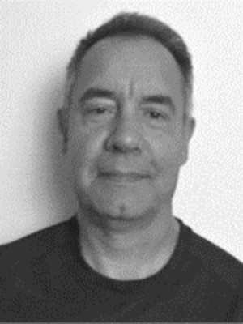

Toponimia Eusquérica en el Mundo
Jose Mari Ugaldea Duralde
Hitzaldia ‘Toponimia eusquérica en el mundo’ liburuaren ingurukoa izango da.
Noiztik berba egiten da euskeraz? Non berba egin izan da euskeraz? Liburuaren helburu nagusia euskeraren antzinatasuna eta zabalera aztertzea da. Euskeraren historia aztertzeko datu barri harrigarriak proposatzen dira. Esate baterako Asian aurkitutako euskal toponimoen antzekoak edo berberak argitaratzen dira. Toponimia edo leku-izenen bitartez, euskeraren antzinako zabalera handiago bat frogatzeko saiakera bat egiten da.
Proposamenaren hasierako puntua, Theo Vennemann hizkuntzalari alemaniarraren honako laburpentxo hau litzateke “en los milenios posteriores al final de la última glaciación, hace aproximadamente 10.000 años, toda Europa occidental, central y norte era vascónica, de ahí que el vascónico se entienda como un grupo de lenguas emparentadas entre sí, de las que el euskera actual es la última lengua «superviviente»”.
Gaur egungo euskal datu toponimikoen eta Euskal Herritik kanpoko datuen arteko konparaketan oinarritzen da ikertzeko metodoa. Konparaketa horren emaitza, euskeraren antzinako zabalerak Europa, Asia eta Afrikako zati bat hartu ahal izan zuela da.
Biografia
Markina-Xemeinen 1965. urtean jaioa eta 1993-1996 urte bitartean EHUko Lan Harreman eta Gizarte Langintza Fakultatean, Gizarte Langintzan graduatua.
Euskalgintzan, Euskaldunon Egunkarian (1992-1993) harpidetza sailean komertzial moduan ibili zen harik eta AEKn irakasle lanetan (1993-1996) hasi arte. Hurrengo lau urteak, hau da, 2000. urtera arte, Bizkaiko AEKko koordinatzailea izan zen.
2000ean, Alsazia (Frantzia) aldera joan zen frantsesa eta alemana ikastera. Hainbat lan ezberdin egiten ibili zen zonalde horretan, Suitzan eta Alemanian (automozioko behargina, garbitzailea, posta zerbitzuko langilea...). Horien artean, Frankfurteko Goethe Unibertsitateko euskal bibliotekako liburu eta disken artxibo lanak egiten.
2012an, Markina-Xemein aldera bueltatu zen ‘Universidad de Basarte-Basarte Unibertsitatea’ proiektua sortzeko. Egitasmo honen helburua Markina-Xemein eta inguruko euskera grabatzea edo jasotzea eta euskera eta euskal toponimia aztertzea da. Proiektu hau bestelako lan batzuekaz batera daramaki; biltegizaina hasieran eta gero ordezkapenak informatzaile turistiko moduan Busturialdean.
2014an, Bittor Kapanagaren Euskera erro eta gara liburuaren berrargitalpenean parte hartu zuen.
2017an, Euskal toponimia munduan liburua autoedizioan argitaratu zuen.
2024an, Toponimia eusquérica en el mundo liburua (Bubok) argitaratu zuen.